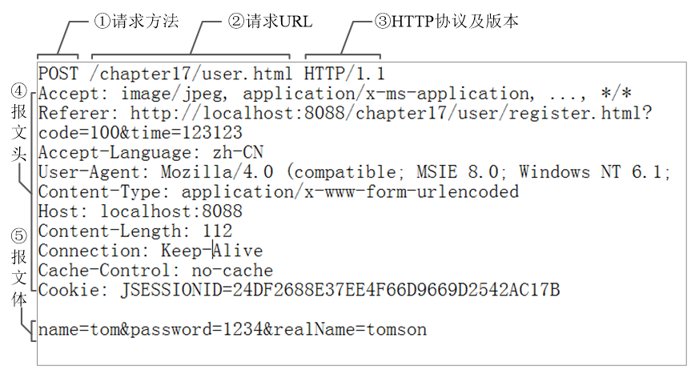

SpringMVC框架
SpringMVC简介
SpringWebMVC是什么？
SpringWebMVC是一种基于Java的实现了WebMVC设计模式的请求驱动类型的轻量级Web框架。即使用了MVC架构模式的思想，将web层进行职责解耦。
- 基于请求驱动指的就是使用请求-响应模型，
- 框架的目的就是帮助我们简化开发，SpringWebMVC也是要简化我们日常Web开发的。
- 在传统的Jsp/Servlet技术体系中，如果要开发接口，一个接口对应一个Servlet，会导致我们开发出许多Servlet，
- 使用SpringMVC可以有效的简化这一步骤。SpringWebMVC也是服务到工作者模式的实现，但进行可优化。
- 前端控制器是DispatcherServlet；
- 应用控制器可以拆为
- 处理器映射器(HandlerMapping)进行处理器管理和
- 视图解析器(ViewResolver)进行视图管理；
- 页面控制器/动作/处理器为Controller接口（仅包含ModelAndViewhandleRequest(request,response)方法，也有人称作Handler）的实现（也可以是任何的POJO类）；
- 支持本地化（Locale）解析、主题（Theme）解析及文件上传等；
- 提供了非常灵活的数据验证、格式化和数据绑定机制；
- 提供了强大的约定大于配置（惯例优先原则）的契约式编程支持。
SpringWebMVC能帮我们做什么
- 让我们能非常简单的设计出干净的Web层和薄薄的Web层；
- 进行更简洁的Web层的开发；
- 天生与Spring框架集成（如IoC容器、AOP等）；
- 提供强大的约定大于配置的契约式编程支持；
- 能简单的进行Web层的单元测试；
- 支持灵活的URL到页面控制器的映射；
- 非常容易与其他视图技术集成，如Velocity、FreeMarker等等，因为模型数据不放在特定的API里，而是放在一个Model里（Map数据结构实现，因此很容易被其他框架使用）；
- 非常灵活的数据验证、格式化和数据绑定机制，能使用任何对象进行数据绑定，不必实现特定框架的API；
- 提供一套强大的JSP标签库，简化JSP开发；
- 支持灵活的本地化、主题等解析；
- 更加简单的异常处理；
- 对静态资源的支持；•支持RESTful风格
HelloWorld
环境搭建
jar包
- spring-aop-4.0.4.RELEASE.jar
- spring-beans-4.0.4.RELEASE.jar
- spring-context-4.0.4.RELEASE.jar
- spring-core-4.0.4.RELEASE.jar
- spring-expression-4.0.4.RELEASE.jar
- spring-web-4.0.4.RELEASE.jar
- spring-webmvc-4.0.4.RELEASE.jar
- commons-logging-1.1.1.jar（用来打印log）
maven方式
1
2
3
4
5
6
7
8
9
10
11
12
13
14
15
16
17
18
19
20
21
22
23
24
25
26
27
28
29
30
31
32
33
34
35
36
37
38
39
40
41
42
43
44
45
46
47
48
49
50
51
52
53
54
55
56<properties>
<spring.version>5.2.5.RELEASE</spring.version>
</properties>
<dependencyManagement>
<dependency>
<groupId>commons-logging</groupId>
<artifactId>commons-logging</artifactId>
<version>1.2</version>
</dependency>
<dependency>
<groupId>junit</groupId>
<artifactId>junit</artifactId>
<version>4.12</version>
</dependency>
</dependencies>
</dependencyManagement>
<dependencies>
<!--添加了spring-webmvc依赖之后，其他的spring-web、spring-aop、springcontext等等就全部都加入进来了-->
<dependency>
<groupId>org.springframework</groupId>
<artifactId>spring-webmvc</artifactId>
<version>${spring.version}</version>
</dependency>
<!--https://mvnrepository.com/artifact/javax.servlet/javax.servlet-api
4.01版本的就要对应tomcat9.0、3.0版本要对应tomcat7-->
<dependency>
<groupId>javax.servlet</groupId>
<artifactId>javax.servlet-api</artifactId>
<version>4.0.1</version>
<scope>provided</scope>
</dependency>
<dependency>
<groupId>javax.servlet.jsp</groupId>
<artifactId>javax.servlet.jsp-api</artifactId>
<version>2.3.3</version>
</dependency>
</dependencies>
<build>
<plugins>
<plugin>
<!--pom中设置jdk版本，否则每次修改后都会回到默认的1.5-->
<groupId>org.apache.maven.plugins</groupId>
<artifactId>maven-compiler-plugin</artifactId>
<version>3.8.1</version>
<configuration>
<source>1.8</source>
<target>1.8</target>
</configuration>
</plugin>
</plugins>
</build>

准备controller层
准备一个Controller，即一个处理浏览器请求的接口。
1 | package top.fulsun.helloWorld; |
这里我们我们创建出来的Controller就是前端请求处理接口。
创建视图
这里我们就采用jsp作为视图，在main/webapp目录下创建jsp/hello.jsp文件，内容如下：
1 | <% contentType="text/html;charset=UTF-8" language="java"%> |
springmvc的配置文件
在resources目录下，创建一个名为spring-servlet.xml的springmvc的配置文件
1 |
|
启动加载springMVC的配置
在web项目启动时，加载springmvc配置文件，这个配置是在src\main\webapp\WEB-INF\web.xml中完成的
1 |
|
测试
启动tomcat访问http://localhost:8080/hello

SpringMVC工作流程

SpringMVC中的组件
DispatcherServlet：
前端控制器用户请求到达前端控制器，它就相当于mvc模式中的c，DispatcherServlet是整个流程控制的中心，相当于是SpringMVC的大脑，由它调用其它组件处理用户的请求，DispatcherServlet的存在降低了组件之间的耦合性。
HandlerMapping：
处理器映射器HandlerMapping负责根据用户请求找到Handler即处理器（也就是我们所说的Controller），SpringMVC提供了不同的映射器实现不同的映射方式，例如：配置文件方式，实现接口方式，注解方式等，在实际开发中，我们常用的方式是注解方式。
Handler：
处理器Handler是继DispatcherServlet前端控制器的后端控制器，在DispatcherServlet的控制下Handler对具体的用户请求进行处理。由于Handler涉及到具体的用户业务请求，所以一般情况需要程序员根据业务需求开发Handler。（这里所说的Handler就是指我们的Controller）
HandlAdapter：
处理器适配器通过HandlerAdapter对处理器进行执行，这是适配器模式的应用，通过扩展适配器可以对更多类型的处理器进行执行。
ViewResolver：
视图解析器ViewResolver负责将处理结果生成View视图，ViewResolver首先根据逻辑视图名解析成物理视图名即具体的页面地址，再生成View视图对象，最后对View进行渲染将处理结果通过页面展示给用户。SpringMVC框架提供了很多的View视图类型，包括：jstlView、freemarkerView、pdfView等。一般情况下需要通过页面标签或页面模版技术将模型数据通过页面展示给用户，需要由程序员据业务需求开发具体的页面。
DispatcherServlet
作用
DispatcherServlet 是前端控制器设计模式的实现，提供 Spring Web MVC 的集中访问点，而且负责职责的分派，而且与 Spring IOC 容器无缝集成，从而可以获得 Spring 的所有好处。
DispatcherServlet 主要用作职责调度工作，本身主要用于控制流程，主要职责如下：
- 文件上传解析，如果请求类型是 multipart 将通过 MultipartResolver 进行文件上传解析；
- 通过 HandlerMapping，将请求映射到处理器（返回一个 HandlerExecutionChain，它包括一个处理器、多个 HandlerInterceptor 拦截器）；
- 通过 HandlerAdapter 支持多种类型的处理器(HandlerExecutionChain 中的处理器)；
- 通过 ViewResolver 解析逻辑视图名到具体视图实现；
- 本地化解析；
- 渲染具体的视图等；
- 如果执行过程中遇到异常将交给 HandlerExceptionResolver 来解析
配置详解
1 | <servlet> |
- load-on-startup：表示启动容器时是否初始化该 Servlet(实例化并调用其init()方法)。
- Servlet的创建时机： 请求到达以后创建&服务器启动即创建
- 它的值必须是一个整数，表示servlet被加载的先后顺序。
- 如果该元素的值为负数或者没有设置，则容器会当Servlet被请求时再加载。
- 如果值为正整数或者0时，表示容器在应用启动时就加载并初始化这个servlet，值越小，servlet的优先级越高，就越先被加载。值相同时，容器就会自己选择顺序来加载。
- url-pattern：表示哪些请求交给 Spring Web MVC 处理，
"/"是用来定义默认 servlet 映射的。也可以如*.html表示拦截所有以 html 为扩展名的请求 - contextConfigLocation：给DispatcherServlet配置初始化参数,指定Springmvc的核心配置文件。
@RequestMapping注解
@RequestMapping 是映射请求注解
@RequestMapping 概念
SpringMVC使用@RequestMapping注解为控制器指定可以处理哪些 URL 请求
在控制器的类定义及方法定义处都可标注 @RequestMapping
标记在类上：提供初步的请求映射信息。相对于 WEB 应用的根目录
标记在方法上：提供进一步的细分映射信息。相对于标记在类上的 URL。
若类上未标注 @RequestMapping，则方法处标记的 URL 相对于 WEB 应用的根目录
作用：DispatcherServlet 截获请求后，就通过控制器上 @RequestMapping 提供的映射信息确定请求所对应的处理方法。
@ RequestMapping源码参考
1 |
|
RequestMapping 可标注的位置
实验代码
定义页面链接、控制器方法
1 | <a href="springmvc/helloworld">test @RequestMapping</a> |
1 | //声明Bean对象，为一个控制器组件 |
RequestMapping映射请求方式
标准的 HTTP 请求报头

映射请求参数、请求方法或请求头
@RequestMapping 除了可以使用请求 URL 映射请求外，还可以使用请求方法、请求参数及请求头映射请求
@RequestMapping 的 value【重点】、method【重点】、params【了解】 及 heads【了解】 分别表示请求 URL、请求方法、请求参数及请求头的映射条件，他们之间是与的关系，联合使用多个条件可让请求映射更加精确化。
params 和 headers支持简单的表达式：
param1: 表示请求必须包含名为 param1 的请求参数!param1: 表示请求不能包含名为 param1 的请求参数param1 != value1: 表示请求包含名为 param1 的请求参数，但其值不能为 value1{"param1=value1", "param2"}: 请求必须包含名为 param1 和param2 的两个请求参数，且 param1 参数的值必须为 value1
实验代码
定义控制器方法
1
2
3
4
5
6
7
8
9
10
public class SpringMVCController {
public String testMethord(){
System.out.println("testMethord...");
return "success";
}
}
以get方式请求
1
<a href="springmvc/testMethord">testMethord</a>
发生请求错误

以POST方式请求,正常
1
2
3
4<form action="springmvc/testMethord" method="post">
<input type="submit" value="submit">
</form>如果想 Post 和 Get 请求都有效,method指定二者
1
2
3
4
5
6
7
8
public String testRequestMappingMethod() {
return "success";
}
RequestMapping映射请求参数&请求头
可以使用 params 和 headers 来更加精确的映射请求. params 和 headers 支持简单的表达式.
1 |
|
//了解: 可以使用 params 和 headers 来更加精确的映射请求. params 和 headers 支持简单的表达式. @RequestMapping(value=”/testParamsAndHeaders”, params= {“username”,”age!=10”}, headers = { “Accept-Language=en-US,zh;q=0.8” }) public String testParamsAndHeaders(){ System.out.println(“testParamsAndHeaders…”); return “success”; }
实验代码
请求URL
1
2<!--设置请求参数和请求头信息 -->
<a href="springmvc/testParamsAndHeaders">testParamsAndHeaders</a>测试:使用火狐或Chrom浏览器debug测试
测试没有参数情况(不正确)：
1
<a href="springmvc/testParamsAndHeaders">testParamsAndHeaders</a>
警告:
1
No matching handler method found for servlet request: path '/springmvc/testParamsAndHeaders', method 'GET', parameters map[[empty]]
测试参数不对情况(不正确)：
1
<a href="springmvc/testParamsAndHeaders?username=tom&age=10">testParamsAndHeaders</a>
警告:
1
No matching handler method found for servlet request: path '/springmvc/testParamsAndHeaders', method 'GET', parameters map['username' -> array<String>['tom'], 'age' -> array<String>['10']]
测试参数个数情况(不正确)：
1
<a href="springmvc/testParamsAndHeaders?age=11">testParamsAndHeaders</a>
警告:
1
No matching handler method found for servlet request: path '/springmvc/testParamsAndHeaders', method 'GET', parameters map['age' -> array<String>['11']]
测试有参数情况(正确)：
1
<a href="springmvc/testParamsAndHeaders?username=tom&age=15">testParamsAndHeaders</a>
请求占位符PathVariable注解
@PathVariable
带占位符的 URL 是 Spring3.0 新增的功能，该功能在 SpringMVC 向 REST 目标挺进发展过程中具有里程碑的意义
通过 @PathVariable 可以将 URL 中占位符参数绑定到控制器处理方法的入参中：
URL 中的 {xxx} 占位符可以通过 @PathVariable("xxx") 绑定到操作方法的入参中。
实验代码
定义控制器方法
1
2
3
4
5
6//@PathVariable 注解可以将请求URL路径中的请求参数，传递到处理请求方法的入参中
public String testPathVariable( Integer id){
System.out.println("testPathVariable...id="+id);
return "success";
}请求链接
1
2<!-- 测试 @PathVariable -->
<a href="springmvc/testPathVariable/1">testPathVariable</a>
REST
参考资料：
理解本真的REST架构风格: http://kb.cnblogs.com/page/186516/
REST是什么？
REST：即 Representational State Transfer。（资源）表现层状态转化。是目前最流行的一种互联网软件架构。它结构清晰、符合标准、易于理解、扩展方便，所以正得到越来越多网站的采用
- 资源（Resources）：网络上的一个实体，或者说是网络上的一个具体信息。它可以是一段文本、一张图片、一首歌曲、一种服务，总之就是一个具体的存在。可以用一个URI（统一资源定位符）指向它，每种资源对应一个特定的 URI 。获取这个资源，访问它的URI就可以，因此 URI 即为每一个资源的独一无二的识别符。
- 表现层（Representation）：把资源具体呈现出来的形式，叫做它的表现层（Representation）。比如，文本可以用 txt 格式表现，也可以用 HTML 格式、XML 格式、JSON 格式表现，甚至可以采用二进制格式。
- 状态转化（State Transfer）：每发出一个请求，就代表了客户端和服务器的一次交互过程。HTTP协议，是一个无状态协议，即所有的状态都保存在服务器端。因此，如果客户端想要操作服务器，必须通过某种手段，让服务器端发生“状态转化”（State Transfer）而这种转化是建立在表现层之上的，所以就是 “表现层状态转化”。
- 具体说，就是 HTTP 协议里面，四个表示操作方式的动词：GET、POST、PUT、DELETE。它们分别对应四种基本操作：GET 用来获取资源，POST 用来新建资源，PUT 用来更新资源，DELETE 用来删除资源。URL风格
URL示例：
order/1 HTTP GET ：获取 id = 1 的 order
order/1 HTTP DELETE：删除 id = 1的 order
order HTTP PUT：更新order
order HTTP POST：新增 order
HiddenHttpMethodFilter
浏览器 form 表单只支持 GET 与 POST 请求，而DELETE、PUT 等 method 并不支持，Spring3.0 添加了一个过滤器，可以将这些请求转换为标准的 http 方法，使得支持 GET、POST、PUT 与 DELETE 请求。请求隐含参数名称必须叫做”_method”。

源码分析
HiddenHttpMethodFilter可以认为是过滤器(filter)：就是对请求起到过滤的作用，它在监听器之后，作用在servlet之前，对请求进行过滤；可以保证在请求到达 DispatcherServlet 之前进行请求转换。
1 | public class HiddenHttpMethodFilter extends OncePerRequestFilter { |
测试代码
web.xml 配置HiddenHttpMethodFilte过滤器
1
2
3
4
5
6
7
8
9<!-- 支持REST风格的过滤器：可以将POST请求转换为PUT或DELETE请求 -->
<filter>
<filter-name>HiddenHttpMethodFilter</filter-name>
<filter-class>org.springframework.web.filter.HiddenHttpMethodFilter</filter-class>
</filter>
<filter-mapping>
<filter-name>HiddenHttpMethodFilter</filter-name>
<url-pattern>/*</url-pattern>
</filter-mapping>代码
1
2
3
4
5
6
7
8
9
10
11
12
13
14
15
16
17
18
19
20
21
22
23
24
25
26
27
28
29
30
31
32
33
34
35
36
37
38
39
40/**
* 1.测试REST风格的 GET,POST,PUT,DELETE 操作
* 以CRUD为例：
* 新增: /order POST
* 修改: /order/1 PUT update?id=1
* 获取: /order/1 GET get?id=1
* 删除: /order/1 DELETE delete?id=1
* 2.如何发送PUT请求或DELETE请求?
* ①.配置HiddenHttpMethodFilter
* ②.需要发送POST请求
* ③.需要在发送POST请求时携带一个 name="_method"的隐含域，值为PUT或DELETE
* 3.在SpringMVC的目标方法中如何得到id值呢?
* 使用@PathVariable注解
*/
public String testRESTGet( Integer id){
System.out.println("testRESTGet id="+id);
return "success";
}
public String testRESTPost(){
System.out.println("testRESTPost");
return "success";
}
public String testRESTPut( Integer id){
System.out.println("testRESTPut id="+id);
return "success";
}
public String testRESTDelete( Integer id){
System.out.println("testRESTDelete id="+id);
return "success";
}请求链接
1
2
3
4
5
6
7
8
9
10
11
12
13
14
15
16
17
18
19
20<!-- 实验1 测试 REST风格 GET 请求 -->
<a href="springmvc/testRESTGet/1">testREST GET</a><br/><br/>
<!-- 实验2 测试 REST风格 POST 请求 -->
<form action="springmvc/testRESTPost" method="POST">
<input type="submit" value="testRESTPost">
</form>
<!-- 实验3 测试 REST风格 PUT 请求 -->
<form action="springmvc/testRESTPut/1" method="POST">
<input type="hidden" name="_method" value="PUT">
<input type="submit" value="testRESTPut">
</form>
<!-- 实验4 测试 REST风格 DELETE 请求 -->
<form action="springmvc/testRESTDelete/1" method="POST">
<input type="hidden" name="_method" value="DELETE">
<input type="submit" value="testRESTDelete">
</form>
小问题

通过控制台的输出可以发现是经过了方法，但是返回到页面确是405，说明能正常发和收到请求，但是返回页面会报405，于是我们可以利用这点：
即对应的PUT方法和delete方法可以重定向到一个地址然后返回页面，就可以正确的到达页面，这是我目前能想到的方法【当然你也可以降到tomcat7.0及以下，不过不推荐】。
1 | /** |
处理请求数据
请求处理方法签名
Spring MVC 通过分析处理方法的签名(方法名+参数列表)，HTTP请求信息绑定到处理方法的相应人参中。
Spring MVC 对控制器处理方法签名的限制是很宽松的，几乎可以按喜欢的任何方式对方法进行签名。
必要时可以对方法及方法入参标注相应的注解（ @PathVariable 、@RequestParam、@RequestHeader 等）、
Spring MVC 框架会将 HTTP 请求的信息绑定到相应的方法入参中，并根据方法的返回值类型做出相应的后续处理。
@RequestParam注解
- 在处理方法入参处使用 @RequestParam 可以把请求参数传递给请求方法
- value：参数名
- required：是否必须。默认为 true, 表示请求参数中必须包含对应的参数，若不存在，将抛出异常
- defaultValue: 默认值，当没有传递参数时使用该值
测试代码
增加控制器方法
1
2
3
4
5
6
7
8
9
10
11
12
13
14
15
16/**
* @RequestParam 映射请求参数到请求处理方法的形参
* 1. 如果请求参数名与形参名一致， 则可以省略@RequestParam的指定。
* 2. @RequestParam 注解标注的形参必须要赋值。 必须要能从请求对象中获取到对应的请求参数。
* 可以使用required来设置为不是必须的。
* 3. 可以使用defaultValue来指定一个默认值取代null,如果定义为int的时候，给null会报错
* 客户端的请求:testRequestParam?username=Tom&age=22
*/
public String testRequestParam(String username,
int age ) {
//web: request.getParameter() request.getParameterMap()
System.out.println(username + " , " + age);
return "success";
}增加页面链接
1
2<!--测试 请求参数 @RequestParam 注解使用 -->
<a href="springmvc/testRequestParam?username=Tom&age=10">testRequestParam</a>
@RequestHeader 注解
使用 @RequestHeader 绑定请求报头的属性值
请求头包含了若干个属性，服务器可据此获知客户端的信息，通过 @RequestHeader 即可将请求头中的属性值绑定到处理方法的入参中
实验代码
增加控制器方法
1
2
3
4
5
6
7
8
9
10/**
* @RequestHeader 映射请求头信息到请求处理方法的形参中
* 用法同 @RequestParam
*/
public String testRequestHeader(String acceptLanguage) {
System.out.println("acceptLanguage:" + acceptLanguage);
return "success";
}测试页面
1
2<!-- 测试 请求头@RequestHeader 注解使用 -->
<a href="springmvc/testRequestHeader">testRequestHeader</a>
@CookieValue 注解
使用 @CookieValue 绑定请求中的 Cookie 值
@CookieValue 可让处理方法入参绑定某个 Cookie 值
实验代码
增加控制器方法
1
2
3
4
5
6
7
8/**
* @CookieValue 映射cookie信息到请求处理方法的形参中
*/
public String testCookieValue(String sessionId) {
System.out.println("sessionid:" + sessionId);
return "success";
}增加页面链接
1
2<!--测试 请求Cookie @CookieValue 注解使用 -->
<a href="springmvc/testCookieValue">testCookieValue</a>
使用POJO作为参数
使用 POJO 对象绑定请求参数值
Spring MVC 会按请求参数名和 POJO 属性名进行自动匹配，自动为该对象填充属性值。支持级联属性。
实验代码
增加控制器方法、表单页面
1
2
3
4
5
6
7
8
9/**
* POJO
*/
public String testPOJO(User user) {
System.out.println("user:" + user);
return "success";
}添加页面链接
1
2
3
4
5
6
7
8
9
10
11<!-- 测试 POJO 对象传参，支持级联属性 -->
<form action=" testPOJO" method="POST">
username: <input type="text" name="username"/><br>
password: <input type="password" name="password"/><br>
email: <input type="text" name="email"/><br>
age: <input type="text" name="age"/><br>
city: <input type="text" name="address.city"/><br>
province: <input type="text" name="address.province"/>
<input type="submit" value="Submit"/>
</form>增加实体类
1
2
3
4
5
6
7
8
9
10
11
12
13
14
15
16
17
18
19
20
21
22
23
24
25
26//=========Address=================
public class Address {
private String province;
private String city;
//get/set
}
//=========User=================
public class User {
private Integer id ;
private String username;
private String password;
private String email;
private int age;
// 页面可以通过级联属性赋值 address.city address.province
private Address address;
//get/set
}
如果中文有乱码，需要配置字符编码过滤器，且配置其他过滤器之前，如（HiddenHttpMethodFilter），否则不起作用。（思考method=”get”请求的乱码问题怎么解决的）
1
2
3
4
5
6
7
8
9
10
11
12
13
14
15
16
17
18<!-- 配置字符集 -->
<filter>
<filter-name>encodingFilter</filter-name>
<filter-class>org.springframework.web.filter.CharacterEncodingFilter</filter-class>
<init-param>
<param-name>encoding</param-name>
<param-value>UTF-8</param-value>
</init-param>
<init-param>
<param-name>forceEncoding</param-name>
<param-value>true</param-value>
</init-param>
</filter>
<filter-mapping>
<filter-name>encodingFilter</filter-name>
<url-pattern>/*</url-pattern>
</filter-mapping>
Servlet原生API作为参数
MVC 的 Handler 方法可以接受哪些 ServletAPI 类型的参数
- HttpServletRequest
- HttpServletResponse
- HttpSession HttpSession session = request.getSession();
- java.security.Principal
- Locale
- InputStream
- OutputStream
- Reader
- Writer
源码参考：AnnotationMethodHandlerAdapter L866

resolveStandardArgument
1
2
3
4
5
6
7
8
9
10
11
12
13
14
15
16
17
18
19
20
21
22
23
24
25
26
27
28
29
30
31
32
33
34
35
36
37
38
39
40
41
42
43
44
45
46
47
48
49
protected Object resolveStandardArgument(Class<?> parameterType, NativeWebRequest webRequest) throws Exception {
HttpServletRequest request = webRequest.getNativeRequest(HttpServletRequest.class);
HttpServletResponse response = webRequest.getNativeResponse(HttpServletResponse.class);
if (ServletRequest.class.isAssignableFrom(parameterType) ||
MultipartRequest.class.isAssignableFrom(parameterType)) {
Object nativeRequest = webRequest.getNativeRequest(parameterType);
if (nativeRequest == null) {
throw new IllegalStateException(
"Current request is not of type [" + parameterType.getName() + "]: " + request);
}
return nativeRequest;
}
else if (ServletResponse.class.isAssignableFrom(parameterType)) {
this.responseArgumentUsed = true;
Object nativeResponse = webRequest.getNativeResponse(parameterType);
if (nativeResponse == null) {
throw new IllegalStateException(
"Current response is not of type [" + parameterType.getName() + "]: " + response);
}
return nativeResponse;
}
else if (HttpSession.class.isAssignableFrom(parameterType)) {
return request.getSession();
}
else if (Principal.class.isAssignableFrom(parameterType)) {
return request.getUserPrincipal();
}
else if (Locale.class.equals(parameterType)) {
return RequestContextUtils.getLocale(request);
}
else if (InputStream.class.isAssignableFrom(parameterType)) {
return request.getInputStream();
}
else if (Reader.class.isAssignableFrom(parameterType)) {
return request.getReader();
}
else if (OutputStream.class.isAssignableFrom(parameterType)) {
this.responseArgumentUsed = true;
eturn response.getOutputStream();
}
else if (Writer.class.isAssignableFrom(parameterType)) {
this.responseArgumentUsed = true;
return response.getWriter();
}
return super.resolveStandardArgument(parameterType, webRequest);
}实验代码
编写控制器
1
2
3
4
5
6
7
8
9
10
11
12
13
14
15
16
17
18
19
20
21
22
23
24
25
26/**
* 测试原生的Servlet API
* @throws IOException
* @throws ServletException
*/
public void testServletAPI(HttpServletRequest request, HttpServletResponse response ) throws ServletException, IOException {
System.out.println("request: " + request );
System.out.println("response: " + response );
//利用转发，实现允许用户访问WEB-INF下保存的指定资源
request.setAttribute("name", "cjj");
// 传统方式转发
//request.getRequestDispatcher("/WEB-INF/views/success.jsp").forward(request, response);
//SpringMVC方式
// return "forward:/WEB-INF/views/success.jsp";
// 传统方式重定向 将数据写给客户端
// response.sendRedirect("http://www.baidu.com");
// SpringMVC方式
// return new ModelAndView(new RedirectView("https://www.baidu.com",false,false));
// return "redirect:https://www.baidu.com/";
response.getWriter().println("Hello Springmvc ");
}添加页面链接
1
2<!-- 测试 Servlet API 作为处理请求参数 -->
<a href="springmvc/testServletAPI">testServletAPI</a>
处理响应数据
提供了以下几种途径输出模型数据
- ModelAndView: 处理方法返回值类型为 ModelAndView 时, 方法体即可通过该对象添加模型数据
- Map 及 Model: 入参为 org.springframework.ui.Model、org.springframework.ui.ModelMap 或 java.uti.Map 时，处理方法返回时，Map 中的数据会自动添加到模型中。
ModelAndView
ModelAndView介绍
控制器处理方法的返回值如果为 ModelAndView, 则其既包含视图信息，也包含模型数据信息。
添加模型数据:
1
2MoelAndView addObject(String attributeName, Object attributeValue)
ModelAndView addAllObject(Map<String, ?> modelMap)设置视图:
1
2void setView(View view)
void setViewName(String viewName)
实验代码
增加控制器方法
1
2
3
4
5
6
7
8
9
10
11
12
13
14
15
16
17
18
19
20/**
* 目标方法的返回类型可以是ModelAndView类型:其中包含视图信息和模型数据信息
* 结论: Springmvc会把ModelAndView中的模型数据存放到request域对象中.
*/
public ModelAndView testModelAndView() {
// ModelAndView mav = new ModelAndView();
// 模型数据: username=Admin
// mav.addObject("username", "Admin");
//设置视图信息
// mav.setViewName("success");
String viewName = "success";
ModelAndView mv = new ModelAndView(viewName );
mv.addObject("time",new Date().toString()); //实质上存放到request域中
return mv ;
}增加页面链接
1
2
3
4
5<!--测试 ModelAndView 作为处理返回结果 -->
<a href="springmvc/testModelAndView">testModelAndView</a>
success.jsp页面显示数据
time: ${requestScope.time }断点调试

源码解析
ha.handle得到的mv就是handler（controller）返回的 ModuleAndView

方法继续执行调用processDispatchResult。传入MV,调用render方法。

继续访问render，这里会找到视图解析器，web.xml中我们配置的视图解析器，最后view中的url 会变成 /jsp/success.jsp

InternalResourceViewResolver将逻辑视图名与JSP等视图技术进行匹配 prefix //前缀 suffix //后缀

得到视图解析器后,继续执行 view.render(mv.getModelInternal(), request, response);将模型数据放到视图中

发现view.render是个接口，实现类是个抽象类AbstractView，里面执行renderMergedOutputModel 抽象方法。

这里是将数据的合并到视图中，通过查看AbstractView 的实现类:在AbstractUrlBasedView下看到了上面提到到视图解析器InternalResourceView。exposeModelAsRequestAttributes 将模型数据放到request中。


将模型数据加载到requestScope后，获取转发器，进行url的转发。

页面就可以使用${requestScope.time }获取数据。
Map数据
Map介绍
Spring MVC 在内部使用了一个 org.springframework.ui.Model 接口存储模型数据
Spring MVC 在调用方法前会创建一个隐含的模型对象作为模型数据的存储容器。
如果方法的入参为 Map或 Model 类型，Spring MVC 会将隐含模型的引用传递给这些入参。
在方法体内，开发者可以通过这个入参对象访问到模型中的所有数据，也可以向模型中添加新的属性数据


实验代码
增加控制器方法
1
2
3
4
5
6
7
8
9
10
11
12
13
14
15
16
17
18
19
20
21
22
23
24
25
26
27/**
* Model
*/
public String testModel(Model model) {
//模型数据 : loginMsg=用户名或者密码错误
model.addAttribute("loginMsg", "用户名或者密码错误");
return "success";
}
/**
* Map
* 结论: SpringMVC会把Map中的模型数据存放到request域对象中.
* SpringMVC再调用完请求处理方法后，不管方法的返回值是什么类型，都会处理成一个ModelAndView对象（参考DispatcherServlet）
*
*/
public String testMap(Map<String,Object> map ) {
//模型数据: password=123456
System.out.println(map.getClass().getName()); //BindingAwareModelMap
map.put("password", "123456");
return "success";
}增加页面链接
1
2
3<a href="testModel">Test Model</a>
<br/>
<a href="testMap">Test Map</a>注意问题：Map集合的泛型，key为String,Value为Object,而不是String
测试参数类型
1 | //目标方法的返回类型也可以是一个Map类型参数（也可以是Model,或ModelMap类型） |
推荐：Map, 便于框架移植。
源码参考
1 | public class BindingAwareModelMap extends ExtendedModelMap { |
视图解析
SpringMVC解析视图概述
不论控制器返回一个String,ModelAndView,View都会转换为ModelAndView对象，由视图解析器解析视图，然后，进行页面的跳转。
二个接口
View

ViewResolver

源码分析
debug断点,流程同上源码解析

流程图

视图和视图解析器
请求处理方法执行完成后，最终返回一个 ModelAndView 对象。对于那些返回 String，View 或 ModeMap 等类型的处理方法，Spring MVC 也会在内部将它们装配成一个 ModelAndView 对象，它包含了逻辑名和模型对象的视图
Spring MVC 借助视图解析器（ViewResolver）得到最终的视图对象（View），最终的视图可以是 JSP ，也可能是 Excel、JFreeChart等各种表现形式的视图
对于最终究竟采取何种视图对象对模型数据进行渲染，处理器并不关心，处理器工作重点聚焦在生产模型数据的工作上，从而实现 MVC 的充分解耦
视图是由视图解析器解析得到的

视图
视图的作用是渲染模型数据，将模型里的数据以某种形式呈现给客户,主要就是完成转发或者是重定向的操作.
为了实现视图模型和具体实现技术的解耦，Spring 在 org.springframework.web.servlet 包中定义了一个高度抽象的 View 接口：

视图对象由视图解析器负责实例化。由于视图是无状态的，所以他们不会有线程安全的问题
常用的视图实现类

JstlView
- 若项目中使用了JSTL，则SpringMVC 会自动把视图由InternalResourceView转为 JstlView 。
- （可以断点调试，将JSTL的jar包增加到项目中，视图解析器会自动修改为）
测试代码
不修改之前的代码，将JSTL的jar包增加到项目中，右键lib文件夹，选择Add as Library即可
断点调试

我们在springmvc.xml中配置的视图解析器是InternalResourceViewResolver，

使用maven方式引入jstl
1 | <!--tomca7 以下版本，在运行时会提供对 jstl 的支持。 |
出现问题

解决： 没有通过maven方式解决成功，推荐手动将jar包放到lib目录下
jstl.jar 包在ide项目中有，但在tomcat发布的应用WEB-INF/lib下没有，这是工具发布项目的问题，复制一个jar包过去问题就解决了。

mvc:view-controller标签
若希望直接响应通过 SpringMVC 渲染的页面，可以使用 mvc:view-controller 标签实现
1
2
3
4
public String testView() {
return "success";
}controller中只做跳转到success.jps页面，可以使用配置文件
1
2<!-- 直接配置响应的页面：无需经过控制器Handler来执行结果，直接跳转页面 -->
<mvc:view-controller path="testViewContorller" view-name="success"/>配置
<mvc:view-controller>会导致其他请求路径失效解决办法：
1
2
3<!-- 在实际开发过程中都需要配置mvc:annotation-driven标签,这里先配置上 -->
<mvc:annotation-driven/>
<mvc:view-controller path="testViewContorller" view-name="success"/>
重定向
一般情况下，控制器方法返回字符串类型的值会被当成逻辑视图名处理进行转发, 如果返回的字符串中带 forward: 或 redirect: 前缀时，SpringMVC 会对他们进行特殊处理：将 forward: 和 redirect: 当成指示符，其后的字符串作为 URL 来处理.
redirect:success.jsp：会完成一个到 success.jsp 的重定向的操作forward:success.jsp：会完成一个到 success.jsp 的转发操作
1 | /** |
源码分析
通过逻辑视图进行视图解析的时候是字符串

获取的视图解析器，得到的不是jstlView，而是
org.springframework.web.servlet.view.RedirectView
处理JSON
返回JSON
添加 Jar包。http://wiki.fasterxml.com/JacksonDownload/
jackson-annotations-2.1.5.jar
jackson-core-2.1.5.jar
jackson-databind-2.1.5.jar
Maven方式
1
2
3
4
5
6
7
8
9
10
11
12
13
14
15
16<!--Jackson required包-->
<dependency>
<groupId>com.fasterxml.jackson.core</groupId>
<artifactId>jackson-core</artifactId>
<version>2.8.1</version>
</dependency>
<dependency>
<groupId>com.fasterxml.jackson.core</groupId>
<artifactId>jackson-databind</artifactId>
<version>2.8.1</version>
</dependency>
<dependency>
<groupId>com.fasterxml.jackson.core</groupId>
<artifactId>jackson-annotations</artifactId>
<version>2.8.1</version>
</dependency>编写目标方法，使其返回 JSON 对应的对象或集合
1
2
3
4
5
6//SpringMVC对JSON的支持
public Collection<Employee> testJSON(){
return employeeDao.getAll();
}
增加页面代码：index.jsp
1
2
3
4
5
6
7
8
9
10
11
12
13
14
15
16
17
18
19
20
21
22
23
24
25
26
27
28
29
30
31
32
33
34
35
36
37
38
39<%@ page language="java" contentType="text/html; charset=UTF-8"
pageEncoding="UTF-8"%>
<!DOCTYPE html PUBLIC "-//W3C//DTD HTML 4.01 Transitional//EN"
"http://www.w3.org/TR/html4/loose.dtd">
<html>
<head>
<meta http-equiv="Content-Type" content="text/html; charset=UTF-8">
<title>Insert title here</title>
<script type="text/javascript" src="scripts/jquery-1.9.1.min.js"></script>
<script type="text/javascript">
$(function(){
$("#testJSON").click(function(){
var url = this.href ;
var args = {};
$.post(url,args,function(data){
for(var i=0; i<data.length; i++){
var id = data[i].id;
var lastName = data[i].lastName ;
alert(id+" - " + lastName);
}
});
return false ;
});
});
</script>
</head>
<body>
<a href="empList">To Employee List</a>
<br><br>
<a id="testJSON" href="testJSON">testJSON</a>
</body>
</html>